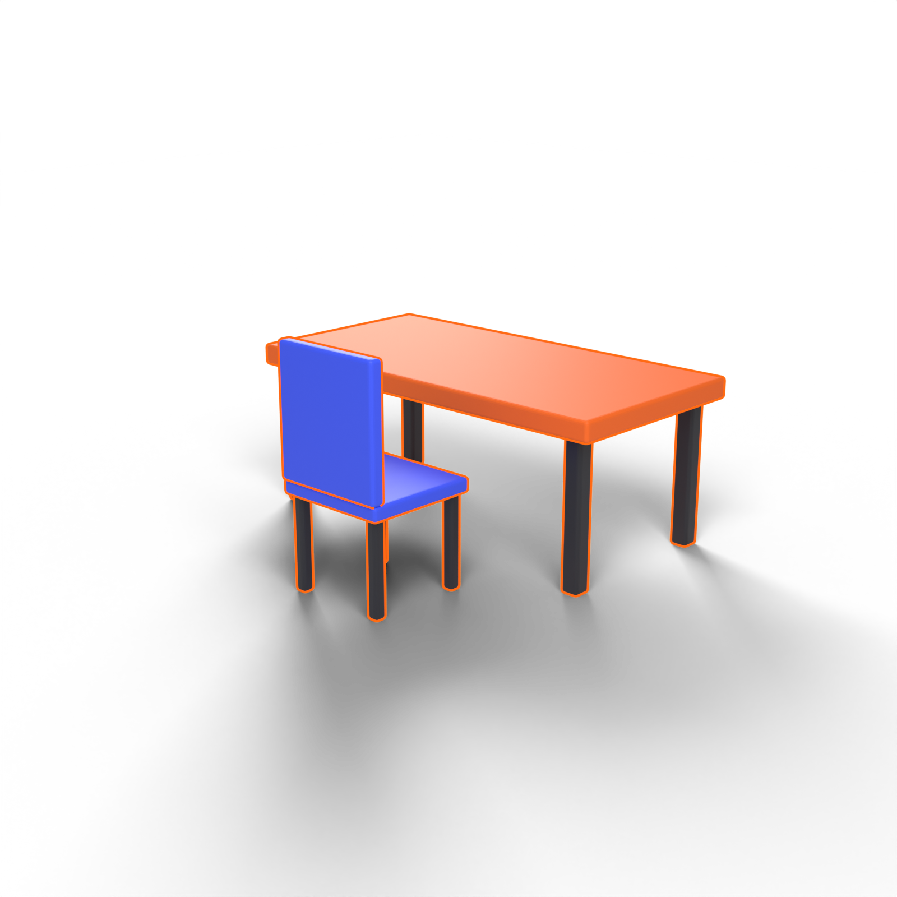
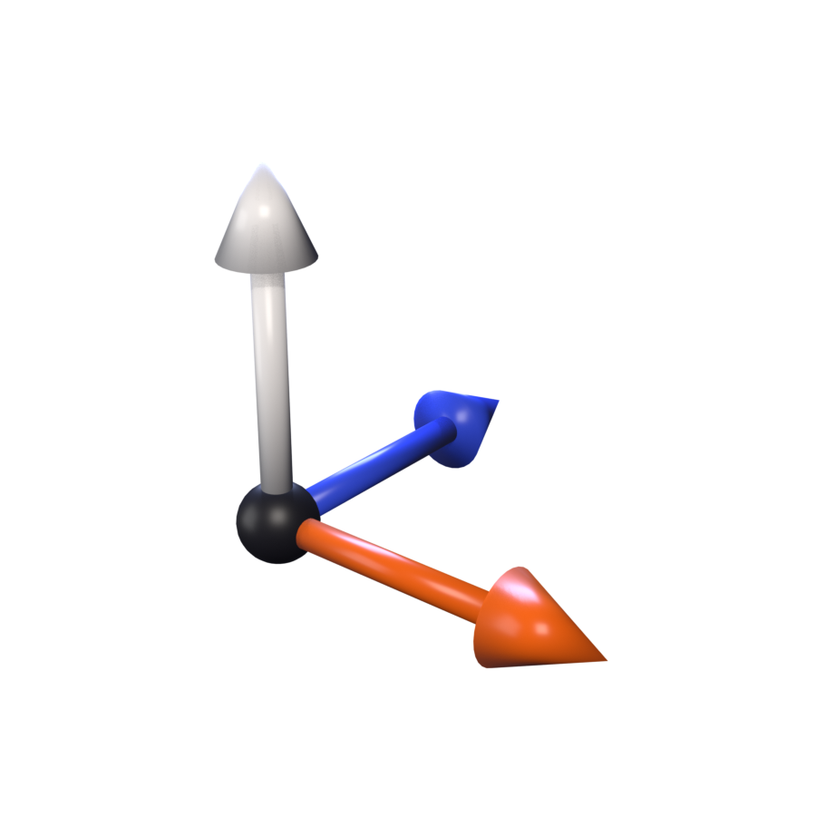
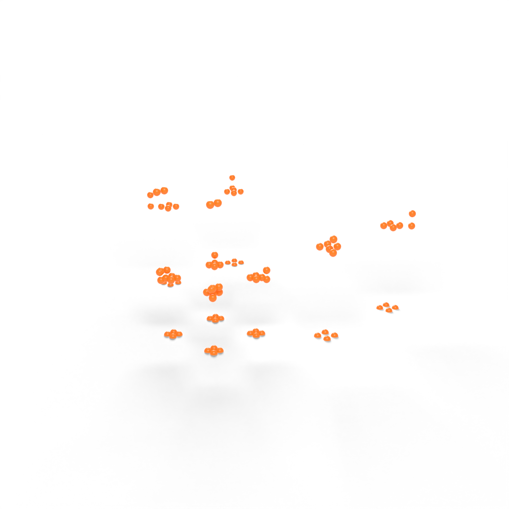
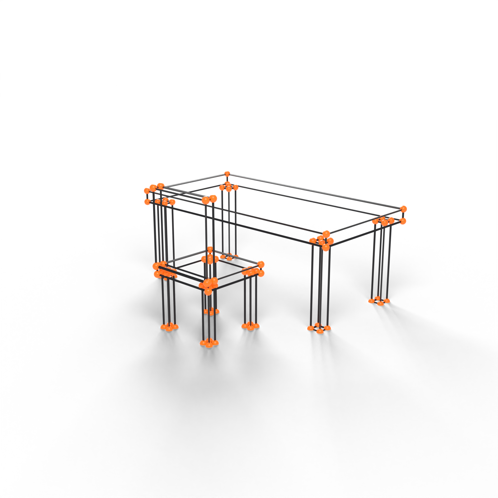
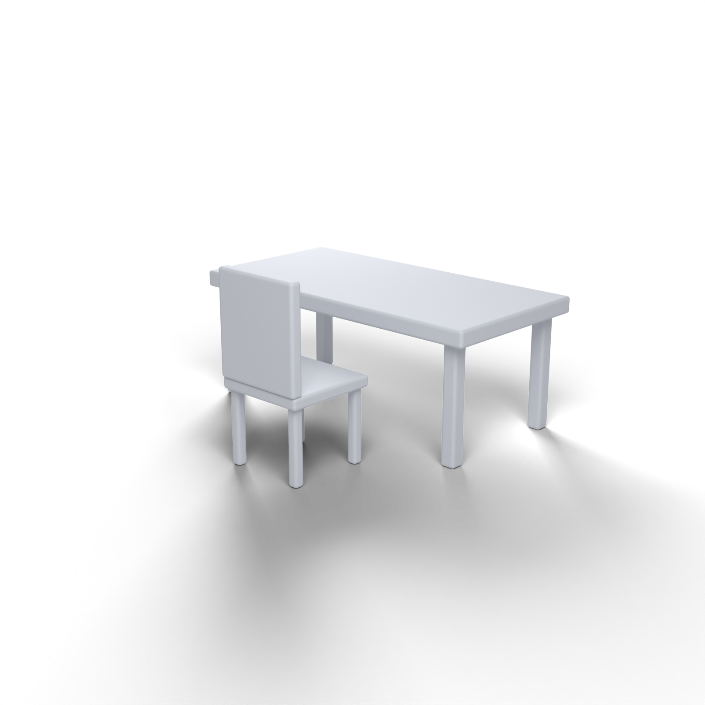

Tutor de Blender com IA · Pesquisa do IFNMG Januária
Modelia: o tutorde IA que ensinavocê a modelarem 3D no Blender


Como faço uma mesa?
Vamos por partes. Passo 1: o tampo. Aperte Shift + A e adicione um cubo.
Abra o Blender, pergunte em português e aprenda fazendo. O Modelia explica, mostra o passo a passo na sua cena e confere o que você modelou.
Como o Modeliafunciona.
Três passos, do primeiro pedido ao seu primeiro objeto.

01 / 03
Abra o Blender ao lado.
O Modelia se conecta à sua cena e enxerga o que está nela.

02 / 03
Peça em português.
"Como faço uma mesa?" Não precisa saber os termos técnicos.
03 / 03
Aprenda fazendo.
Ele explica, mostra na sua cena, você repete e ele confere.
Veja uma aulaacontecendo.
Um pedido de verdade, do começo ao fim, sem cortes.
Espaço do vídeo · 16:9 · loop sem som
Modo Explicar
Tire dúvidascom o materialda disciplina.
Responde só com as apostilas da turma e mostra de onde tirou a resposta. Quando o material não cobre, ele avisa.
Clique em vértice, aresta e face para montar a mesa.
O que é uma aresta?
É a linha que liga dois vértices. Juntas, as arestas formam as faces da malha.
Fonte: Apostila de Modelagem 3D, cap. 2
Modo Ensinar
Um passo por vez,com o atalhode cada um.
O Modelia explica o que vai fazer e mostra o atalho para você repetir à mão. O código aparece antes, e ele só executa quando você clica em Executar.

 Passo 1 de 3 · ainda não executado
Passo 1 de 3 · ainda não executadoModo Demonstrar
Peça um objetoe veja eleser montado.
O Modelia cria o objeto inteiro na sua cena, confere as medidas e corrige o que ficou errado. Depois você estuda cada peça.
Faz uma mesa com cadeira?
Pronto. Tampo a 75 cm, quatro pernas e uma cadeira. Conferi as medidas e corrigi a altura das pernas.


5 cm acima do chão
✓ no chão
Modo Verificar
Fez sozinho?Ele confere.
O Modelia mede a sua cena, diz o que está certo e o que falta, e dá uma dica. Nunca altera o seu trabalho.
Tarefa: Mesa nota 2 de 3nota 3 de 3
- Tampo a 75 cm do chão
- Quatro pernas iguais
- Pernas 5 cm acima do chão
- Pernas tocando o chão
Não é um geradorde modelos.É um tutor.
Outras ferramentas entregam o objeto pronto. O Modelia quer que você saiba fazer: explica cada passo, mostra o atalho e espera você tentar.
IA local.Nada vaipara a nuvem.
O modelo de IA roda no computador, sem internet. Por ser uma pesquisa, as conversas ficam registradas para análise, e você só participa depois de ler e aceitar o termo de consentimento.
Perguntasfrequentes.
O que é o Modelia?
Um tutor de IA que ensina modelagem 3D dentro do Blender, em português.
Preciso saber Blender?
Não. Ele foi feito para quem está começando.
Preciso ter o Blender instalado?
Sim, o Blender 5.1, que é gratuito.
O Modelia faz o modelo por mim?
Só no modo Demonstrar, para você ver como se faz. Nos outros, quem modela é você.
Qual a diferença para o ChatGPT?
O ChatGPT não vê a sua cena. O Modelia vê, age dentro do Blender e responde com o material da sua disciplina.
É pago?
Não.
Funciona sem internet?
Sim, a IA roda no computador.
Quem pode usar?
Os alunos da disciplina, no computador do laboratório. Não precisa de conta nem de senha.
O que acontece com os meus dados?
Ficam no computador da pesquisa e são usados só no TCC, conforme o termo de consentimento.